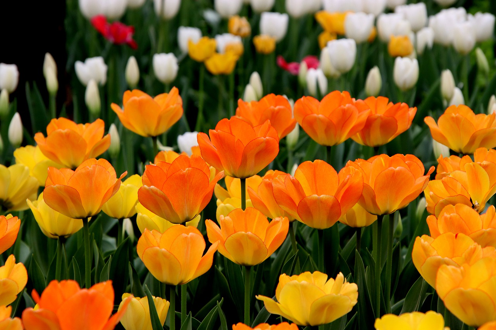

Minimal Future
Somos um grupo de fotógrafos com o desejo de fotografar o mundo e mostrar o que há de belo por ai, espero que goste do nosso Portifolio e acompanhe o nosso trabalho
O grupo se juntou nos anos 2000 como um pequeno passatempo e acabou virando o nosso proposito da nossa vida, hoje contamos com mais de 150 participantes de varios paises diferentes
